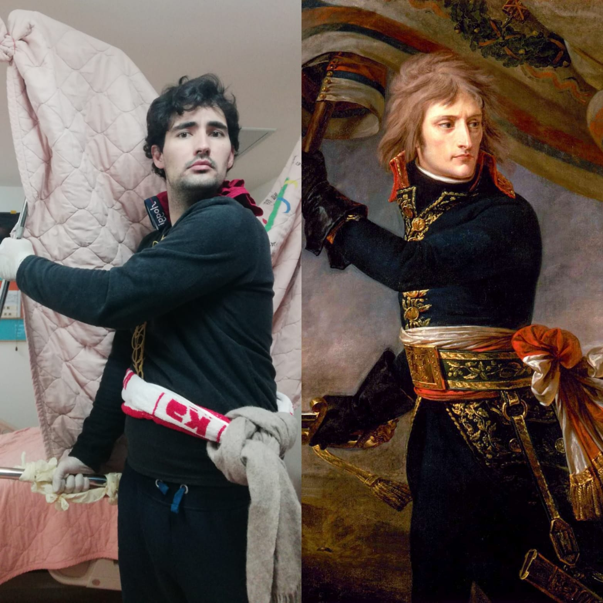
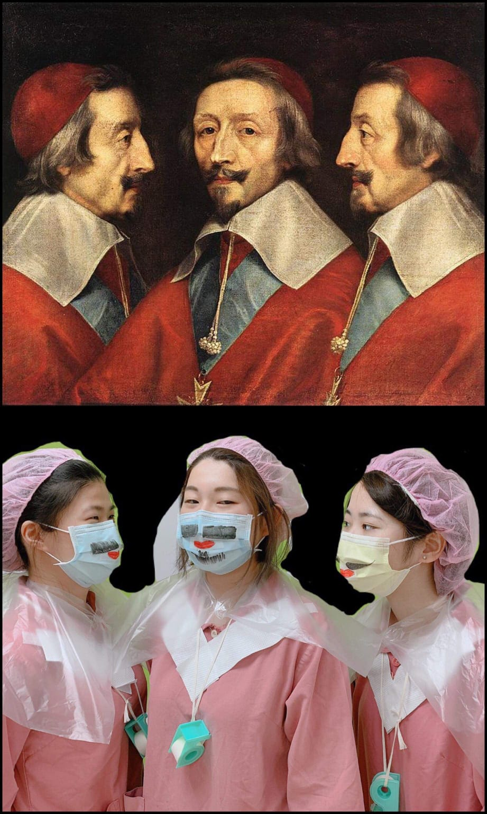
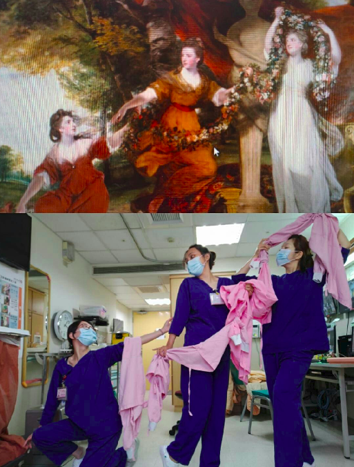
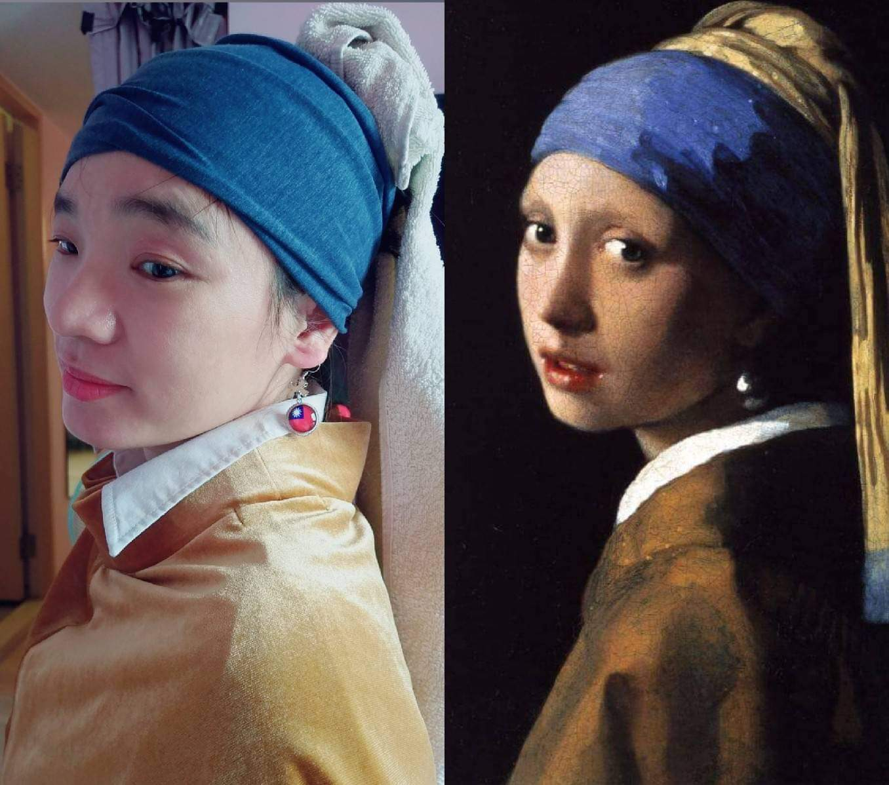
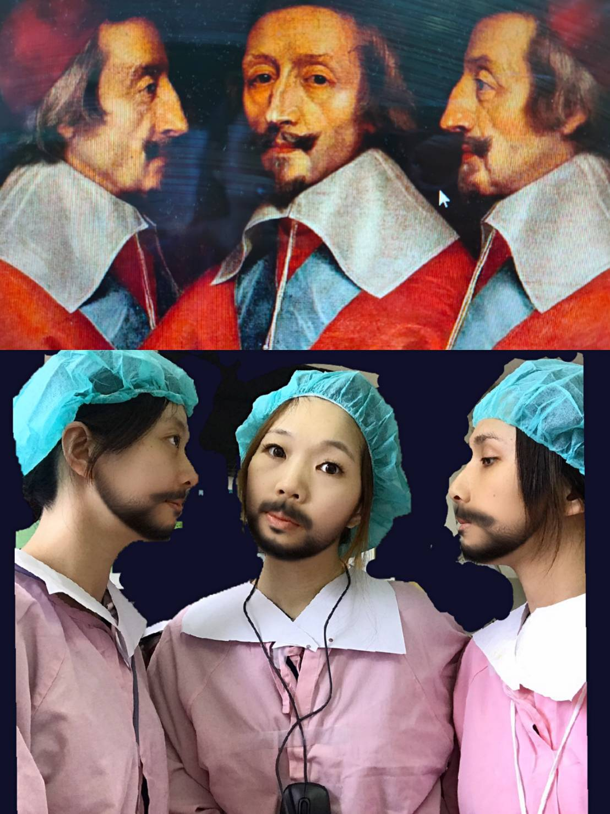
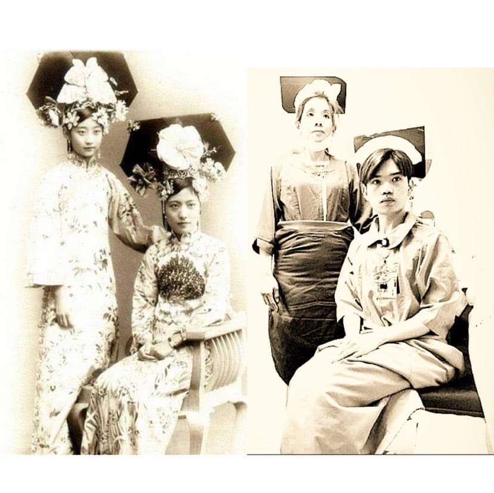
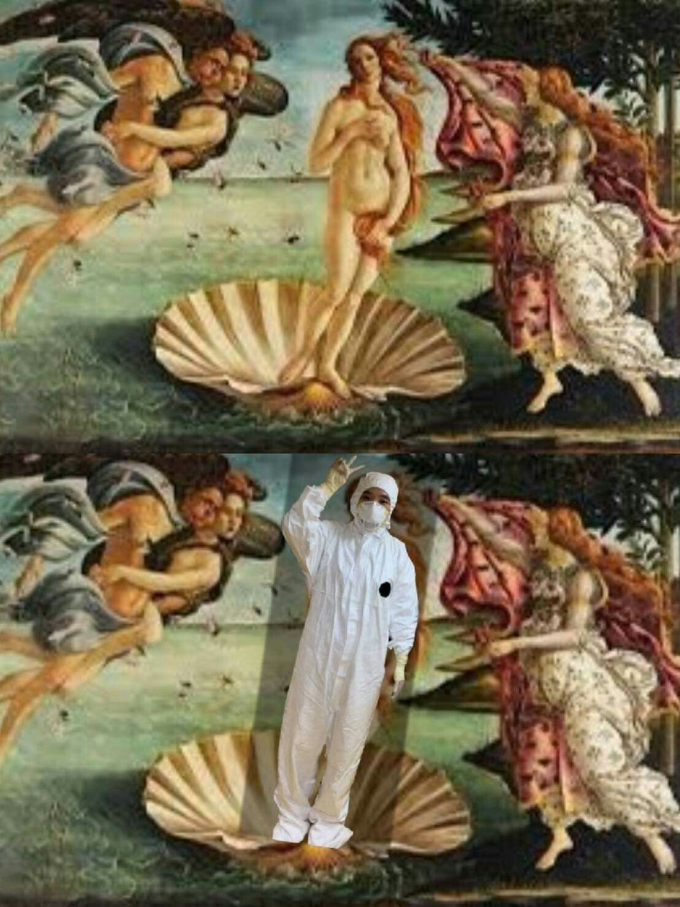
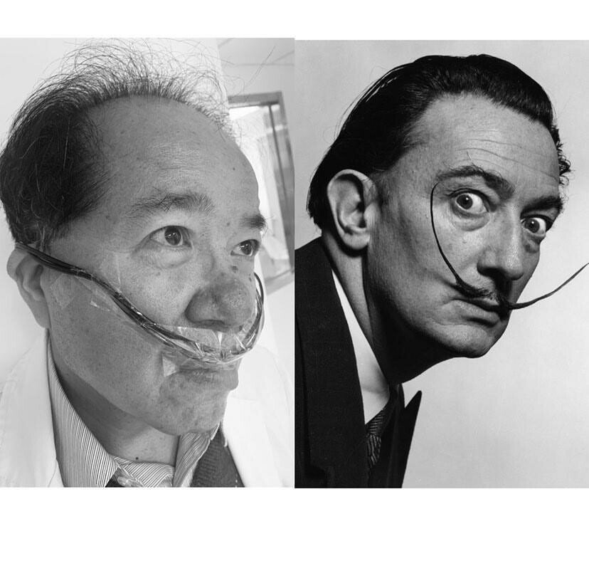

Iels sont trop cools !
La famille de mon "partenaire d'infection", Martin (alias le cas 84), a récemment commencé un fameux jeu : il s'agit de reproduire une peinture célèbre avec les moyens du bord. Ils ont mis Martin au défi et c'est dans sa chambre d'isolation à l'hôpital de Taipei que Martin a brillamment relevé le challenge.
Voici sa reproduction :

Là où ça devient drôle, c'est qu'en préparant sa reproduction, Martin a mis sa chambre en désordre complet. Les infirmières, en le voyant mettre sa chambre sens dessus dessous via la caméra (nous sommes filmés 24h/24 7j/7 pour des raisons de sécurité), ont commencé à paniquer se demandant si Martin perdait la tête !
Après avoir expliqué le pourquoi de cette situation pour le moins comique aux infirmières, Martin leur envoie la photo et reprend ses activités journalières.
Un peu plus tard dans la matinée, quelle ne fut pas la surprise de Martin en recevant ce cliché :

N'est ce pas trop cool ?! Quand Martin m'a transmis cette photo, ma journée a directement été ensoleillée !
Martin m'a proposé de relever le défi à mon tour. J'ai donc moi aussi semé le désordre dans ma chambre pour finalement obtenir mon cliché :

Je me suis alors décidé à lancer ce challenge aux infirmières de l'hôpital de Hsinchu là où je suis moi-même isolé.
Elles se sont vraiment prises au jeu et c'est avec joie que j'ai reçu leur contribution il y a quelques instants :

Excellent n'est ce pas?! Vivre à Taïwan, c'est incroyable ! Même positif au Covid-19 !
Laisse un commentaire pour voter pour l'équipe (Hsinchu ou Taipei) qui a la plus belle reproduction selon toi !
Edit: d'autres réalisations des infirmières de Taïwan & Martin!




